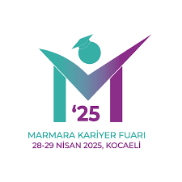
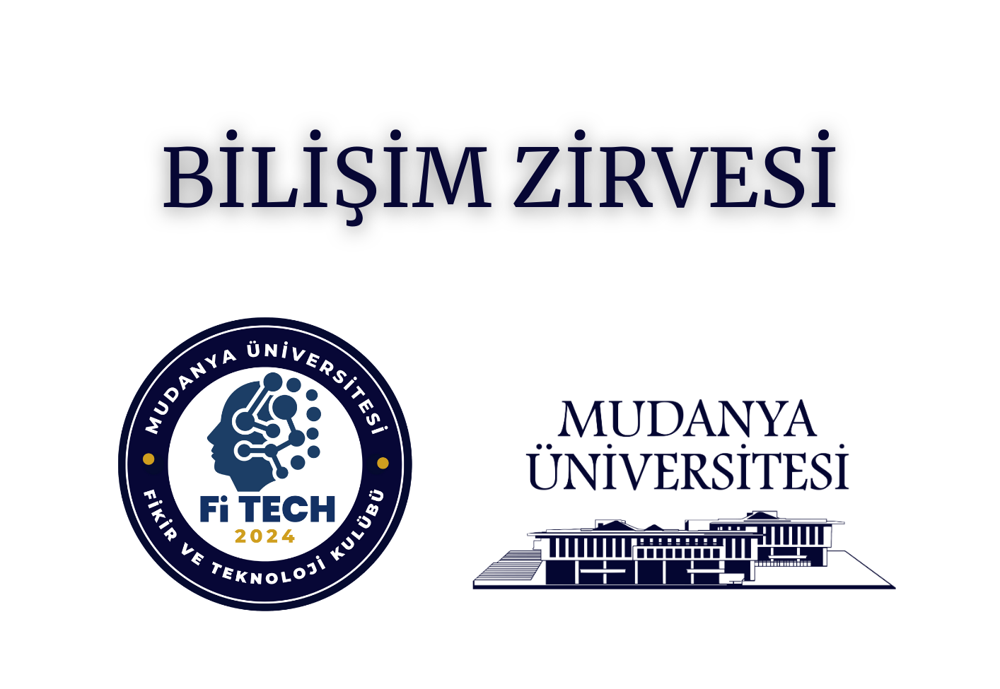

Marmara Kariyer Fuarı (MARMARAKAF)
28 Nisan 2025, 10:00
Kocaeli Üniversitesi
Kocaeli Üniversitesi'nin ev sahipliğiyle düzenlenen Marmara Kariyer Fuarı, gençlerin kariyer yolculuklarında destek ve bilgi sağlayan bir etkinliktir.

Bilişim Zirvesi
21 Mayıs 2025, 10:00
Mudanya Üniversitesi-Konferans Salonu
Yapay zeka ve gelecek teknolojileri hakkında uzman konuşmacılarla interaktif bir buluşma...

Akademisyen-Öğrenci Buluşması
28 Mayıs 2025, 13:00
Teams Meeting
Akademisyen ve öğrenci buluşması, akademik çalışmalarınızı paylaşırken yeni işbirlikleri yapmanızı sağlayan bir etkinliktir.